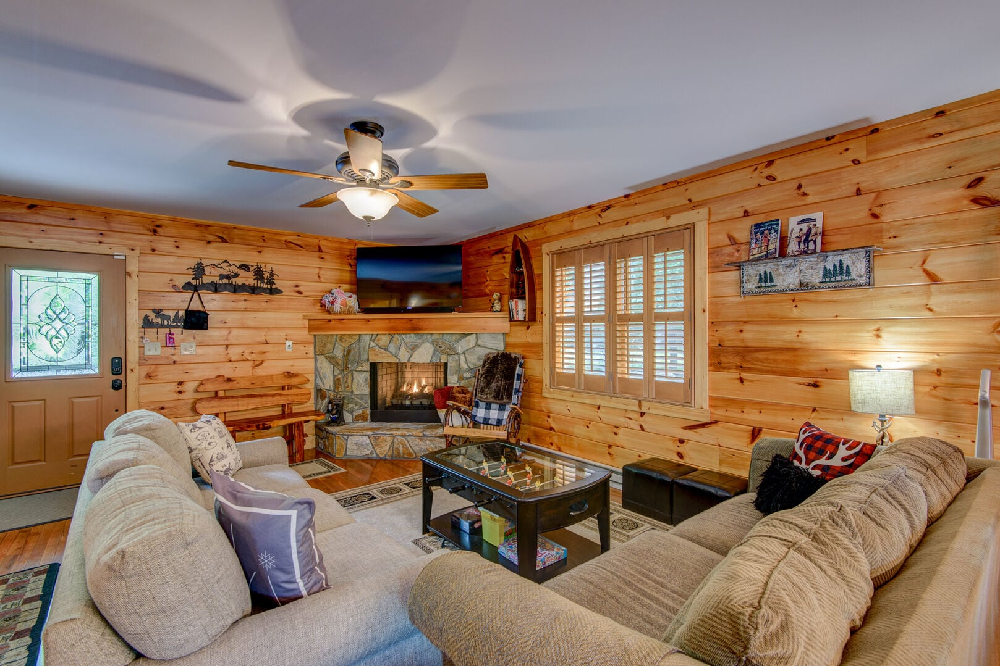

Our pick · easiest balance
Our pick · easiest balanceCabin Christmas
in the High Country
Beech Mountain · 4 nights → Asheville · 2
Snow play, a cozy cabin, then a festive Asheville finish.
Natural snowPossible, variable
All driving12–14 hr
Trip estimate$4.2–7.1k

The stay feeling
Dogwood Den
Fireplace, kitchen, room to spread out.
Maui + Kona: two-dog stays found at both stops.
A little more about this one
Four mountain nights, two city nights. Cabin snow is not guaranteed. Dogwood Den is larger than you need; Asheville adds a hotel splurge.
Dogwood: $200 + tax for both dogs / 4 nights. Grand Bohemian: $200 per stay. Confirm exact rooms and time-alone rules.
Stays, route map & full research ↗